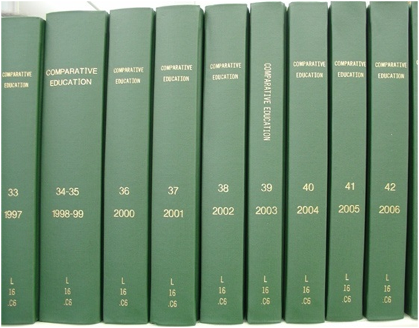

Contact
Princeton University Cataloging Documentation
Contact |
Princeton University Cataloging Documentation |
Serials
What goes where? See also |
Serial Adding at PrincetonAdding is the process of recording new serial volumes so that they are reflected in the catalog as part of the Library's permanent holdings. Adding is done preparatory to binding/labeling. If received unbound, serial issues may be shelved at an unbound location first, until enough issues are collected for a bindable unit; they are not added until ready for binding. All hardbound volumes are added on receipt. Some softbound volumes may also be added on receipt, if they will be bound/labeled singly due to thickness, infrequency, etc. Adding involves these steps:
See also: Adding issues to previously incomplete volumes, a checklist Adding incomplete binding units, a checklist Glossary of selected terms: Bindable unit = a group of issues that will be bound together, or a single issue that will be bound by itself. Can also be called an "item". Call number = a number specifying the exact shelf location of the bound holdings. There are two main systems of classification in use at Princeton: Library of Congress (combines letters and numbers) and Richardson (numbers only). The call number may be headed by a location symbol, indicating that the holdings are in an annex or branch library or other special location, and may end with a size symbol, if volumes are unusually tall or short. The call number for each serial is found on its MFHD, in the 852 field: subfield b (location) + subfields h and i. Designator = a word or abbreviation used with a number in a numerical designation, e.g.: "vol.". Vernacular designators are designators in the language of the serial; a list of these with their official AACR2 abbreviations is here: http://library.princeton.edu/departments/tsd/katmandu/designators/verntoc.html Main entry = the primary access point for a bibliographic record. For serials, it is most often the title (245 field), but it may be a corporate name (110 field), conference name (111 field), or uniform title (130 field). Primary adding element = the designation that has been chosen as the primary way of identifying volumes of a serial. It may be numerical, chronological, or a combination. It must be sufficient, without depending on the secondary, to distinguish each bound volume of a serial from all others. The choice of primary adding element for each serial is documented on its MFHD, in the 866x "DESIGNATOR:" field. Secondary adding element = additional designation information that may be useful in identifying individual volumes of a serial. Some titles have only one system of designation, and therefore no secondary. If the primary is numerical, the secondary is always the year or date if present (as a designation--publication dates are not used). Otherwise, instructions for the secondary may be documented on the MFHD, in the 866x "DESIGNATOR:" field. Title proper = the chief name of a serial; includes any part designations and/or part titles, but excludes parallel titles, other title information, and statements of responsibility. Corresponds to the bib record's 245 field, subfields a, n, and p only. This is the portion of the 245 field that is important for identifying title changes. Step 1: Suppress corresponding receipt records that appear as current issues Use the ellipsis button (...), at right of title, to bring up the matching bib. record. A small percentage of currently received serials have no checkin records in Acq, so will need to be searched in Cat directly. Step 2: Review the bibliographic information In Voyager Cat, verify that the record is the correct one, by checking title and date range. Do not make any updates. If in doubt, consult SeERs. Most important fields to check: Generally, this should match exactly what appears on the title page (or front cover, if there is no title page) of the pieces in hand. If it does not, check for a 246 field that indicates a minor variation. If the 245 does not match and there is no 246 field for the variant, refer to SeERs for a title change decision; do not continue adding. Changes in 245 subfields b or c do not constitute a title change. If the title is in a non-Roman script (e.g. Cyrillic, Greek), it is still important to verify the title match. An ISSN match is not a guarantee that the title has not changed. Romanization tables can be found here: http://www.loc.gov/catdir/cpso/roman.html If present, this indicates that the serial's main entry is a corporate/meeting name, most common with annual reports and conference proceedings. If the 110/111 does not closely match what appears on the piece, locate the authority record (search Author Headings, right-click on "Auth/Ref", click on Retrieve) and check if the variant form is accounted for in a 410 field. If not, refer to SeERs for a title change decision and NACO work; do not continue adding. Check that the pieces in hand don't fall outside the date range given in the 362. If there is no 362, beginning/ending dates may be found in the 008 date fields in the header. Even if the title matches perfectly, the record may be the wrong one if the dates don't fit. Other fields to check: If place of publication and/or publisher don't match pieces in hand, and there is not already a 500 or 550 field noting a change, refer to SeERs for an adjustment. If frequency has changed, refer to SeERs for an adjustment. If issuing body has changed, refer to SeERs for an adjustment and possible NACO work. Step 3: Check the piece(s) in hand for completeness, correct order, supplements, etc. Flip through each issue in the bindable unit to make sure that all are in the correct order. Check that any missing issues have been noted on the binding slip. Note: volumes going to Recap generally cannot be added incomplete; they should be rearranged into complete units if at all possible. Bindable units should generally be no thicker than 2 inches, less if the margins are narrow. Split units if too thick. Remove any loose inserts from the issues. The fact that a piece was received along with a regular issue is not a guarantee that it should be added with that issue, or even with that serial.
Step 4: Update the holdings summary record Click on Retrieve Holdings (strapped books icon) to retrieve the holdings record ("MFHD"). If multiple MFHDs are present, select the correct one from the list. Note: Many serials have partial holdings in a Recap location, and whether it is a newer or older run of volumes that has been recapped varies. If unsure where the new item should be added, check the 866 holdings statements for both locations. In general, you will be adding to the location with the most recent holdings. MFHD fields, in order: 035 OCLC number 852 subfields b location, t copy number, c oversize note, h & i call number 866a summary of bound holdings 866z LACKS note 866z CURRENT ISSUES or CURRENT VOLUME note 866x DESIGNATOR note 866x other non-public notes 866z other public notes 868a cumulative index note Not all of these fields will appear in all records. Generally, the only fields updated in the adding process are the summary of bound holdings and, if applicable, the LACKS note. If notes are present, they may contain information that is important to consult before proceeding with adding. If a title is having issues bound for the first time - 866a field says "NO BOUND HOLDINGS" - give to SeERs. If a title has ceased, and is having issues bound for the last time, give to SeERs. The form for the summary of bound holdings varies greatly, as publishers have many different systems of numbering/dating issues. All designators, months, and seasons should be given in the language of the serial, and abbreviated following AACR2. Capitalization and punctuation may differ according to language, although the first word in the field is always capitalized. English seasons are not capitalized. Vernacular designators: http://library.princeton.edu/departments/tsd/katmandu/designators/verntoc.html Month abbreviations: http://library.princeton.edu/departments/tsd/katmandu/reference/months.html Seasons in various languages: http://www.princeton.edu/~wkuntz/seasons_doc.htm Roman numerals are generally converted to Arabic form. A diagonal slash indicates numbers or dates that were published combined. Examples: 866 _0 |a Vol. 1, no. 1 (Jan. 1986)-v. 26, no. 12 (Dec. 2011) 866 _0 |a No. 36 (Apr. 2008)-no. 42 (June 2012) 866 _0 |a 1984-2001 866 _0 |a 1921/22-1958/59 866 _0 |a 1998, no. 1-2012, no. 6 866 _0 |a 17. Jahrg., Heft 7/8 (Juli/Aug. 1969)-17. Jahrg., Heft 12 (Dez. 1969) 866 _0 |a No 121 (janv. 1971)-no 211 (juin 2003) Parallel numbering system following an equals sign: 866 _0 |a Vol. 1, no. 1 (Jan. 1986)-v. 26, no. 12 (Dec. 2011) = no. 1-no. 192 New series numbering following space, semicolon, space: 866 _0 |a Vol. 1, no. 1 (spring 1955)-v. 12, no. 4 (winter 1966) ; new ser., v. 1, no. 1 (Feb. 1968)-new ser., v. 30, no. 6 (Dec. 1997) Designators are not supplied if they don't appear on the pieces: 866 _0 |a 1 (Sept. 1976)-4 (June 1980) 866 _0 |a 1976, 1-2008, 8 If there is no date designation, date of publication may be given in this form: 866 _0 |a No. 36 (published in 2008)-no. 42 (published in 2012) The holdings summary statement (first 866 field) should be updated to reflect the pieces being added. Generally, the established pattern should be followed, but not if that numbering system can no longer be found on the pieces. Significant numbering changes may require a bib. adjustment; refer to SeERs before proceeding. Note that the data before and after the hyphen need not be perfectly symmetrical. Slight changes over time in the way the publisher has numbered pieces may result in a holdings statement like this: 866 _0 |a Vol. 1, no. 1 (1986)-v. 26, issue 11/12 (Nov./Dec. 2011) ("no." changed to "issue", months added to date designation, combined issue) Supplements are not specifically noted on the MFHD, unless the Library holds only the supplement without the issue/vol. it belongs with. Annual indexes are not specifically noted on the MFHD. Cumulative indexes are noted in an 868 field, but also require a bib. adjustment; refer to SeERs. Sometimes the most recent bound volume of a serial is shelved in one location, then transferred to a permanent location when superseded. In these cases, the holdings are maintained on the MFHD for the permanent location, though the item will be attached to the Current Volume location. Issues missing from a run may be noted in either of two ways: with a gap in the holdings statement, or with a LACKS note. Generally, use the former for large gaps and the latter for scattered missing issues. Avoid overly complex holdings statements that may confuse users. Examples: 866 _0 |a Vol. 1, no. 1 (Jan. 1986)-v. 26, no. 12 (Dec. 2011) 866 _0 |z LACKS: v. 8, no. 9; v. 21, no. 1 866 _0 |a No. 36 (Apr. 2008)-no. 42 (June 2012) 866 _0 |a LACKS: no. 39 866 _0 |a 1984-1988; 1999-2001 Step 5: Pencil the call number and adding elements in the front of each uniFor single issues, the adding is generally penciled on the verso of the title page, near the top. However, do not write on the inside front cover; turn in another page if cover is serving as title page. For multi-piece units, the adding is penciled on the page following the title page, at the bottom. If there is insufficient blank space in these locations, turn in another page or write slightly lower or higher on the page. Pieces may be trimmed in the binding process, so keep the writing some distance from the edges. Serials adding extends horizontally across the page in this order: CALL NO. (SECONDARY) PRIMARY Example: (SCI) The call number starts a new line at each period (note: subfield i does not necessarily start a new line). It's important that it be printed legibly; follow the tips given here to avoid ambiguity: http://library.princeton.edu/departments/tsd/katmandu/phystrea/writing.html For any location other than Firestone stacks, include the location symbol in parentheses at the top of the call number. It's not necessary to include sublocations; e.g., use (Gest) not (GestPe). A list of valid locations can be found here: http://library.princeton.edu/libraries/locations For guidance on how to construct the Primary, see the DESIGNATOR note. Designators are supplied here even if not present on the pieces. Be just as specific as needed to distinguish this volume from others of the same serial; don't include no. if adding a whole vol., or months if adding a whole year. Secondary = date/year unless otherwise noted in the DESIGNATOR note, or unless date/year was primary. Some titles have no secondary, if they have only a single form of designation. Dates in the adding elements must be chronological designations; if only publication dates are available, they are not used here For incomplete binding units, add: (inc.) at the end of the Primary, and fill out a "This Volume Lacks" slip. Example: (SCI) For supplements and annual indexes that are bound apart from the rest of the volume, add: , suppl. or: , index at the end of the Primary. Example: (SCI) However, when supplements or annual indexes are bound together with the main volume, no mention is made of them in the adding elements. Cumulative indexes usually require bib. adjustments; please refer to SeERs. If the previously chosen primary adding element cannot be found on the pieces in hand, first check for an 866x note on the MFHD for help in locating it; also check the usual locations: front & back covers, title page, contents page. If still not found, use instead whatever designation is available and adjust the DESIGNATOR note for future reference. e.g.: Enum: no. 86-88 Chron: July-Nov. 2008 (previous unit) Enum: Jan.-May 2009 Chron: (new unit) 866 _0 |a DESIGNATOR: date (prior to 2009, added by: no.) Please refer to SeERs if adding for the first time after a numbering change, as a bib. adjustment may be needed. Step 6: Create/review an item record for each unit, with barcode assigned In many cases preliminary item records will already have been created, for tracking purposes, by staff who collect material for binding. These records still need to be reviewed by Tech Services staff and adjusted if necessary. One barcode is used for each binding unit. Procedure if no item record yet exists: About Enum and Chron: The data in these fields will not necessarily match the field labels. Enum is used for the primary adding element, whether numerical or not; Chron for the secondary (if present) - without the parentheses. Aside from diacritics, which are not used in item records, these fields should exactly match the written adding in the piece. For incomplete binding units, remember to include (inc.) at the end of the Enum. If item records are out of order, move them up or down to fix. Step 7: Check that the binding slip (if applicable) is complete and correct Serial units traveling from various library locations are accompanied by a slip with binding information as determined by the staff who prepared them. The two types of slip most commonly seen are BIS slips (or similar ones created in branches) and old-style advice slips; both contain the same basic information. These slips serve to match each binding unit to the right catalog and binding records and to specify spine markings for each bound volume. They need to be reviewed by Tech Services staff and corrected where necessary. These fields should always be checked:
Should show the cataloged entry for the serial:
Branch libraries may prefer a slightly different form of title for the spine; do not change unless obviously wrong. Left blank if same as cataloged title.
Should always include location, if other than Firestone stacks, and should exactly match call number as in 852 subfields h & i.
Should always include the MFHD ID number from Voyager. If missing, write it in.
Should only include information that is intended to appear on the bound volume's spine. Roughly matches the adding elements, but in a more streamlined form, as room on the spine is limited. The word "vol." or its vernacular equivalents are omitted; volume numbers are put on the spine without designators. Months are omitted unless needed to distinguish one volume from another (if there is no issue numbering and only a part of the year is being bound together).  Though the advice slip has only labeled space for two levels of enumeration - vol. and no./pt. - this can be adjusted as needed (for example, adding new ser. at top or including vol., no., AND pt.) Areas of the advice slip that are not applicable can just be left blank. Branch libraries may include additional items they want on the spine; leave alone unless obviously wrong.The space marked Notes on the BIS slips, and the blank space at top and bottom of the advice slips, may be used to bring attention to anything that Binding Services staff might need to know about the unit. Examples:
For incomplete units, the Notes area on the BIS slip is also used to specify whether the unit is to be bound as is or in temporary binding. The advice slip has check boxes to indicate this decision, and also a line to list missing issues. Regardless of binding decision, all incomplete units should be accompanied by a "This Volume Lacks" slip listing what's missing plus the date of adding. Step 8: Charge the units and send them on for the next stage of processing Sort and charge as appropriate: Softbound serials Shelf Direct and Binding, Softcover Hardbound serials no need to charge Incomplete units to be temp. bound Collections Conservation "Refer to SeERs" units SeERS for adding Charging to some locations will cause a warning to pop up: "This item is not authorized to circulate from this location"; ok to Override. If "Item not found" message appears, go back and check that the barcode number was entered correctly in the item record. Tie or rubber-band multi-piece units together. |
| ©2008 Princeton University Last Modified 05/15/2014 |